줄넘기 수업 준비,
이제 혼자 고민하지 마세요
급수 영상, 음원, 월 교육계획표까지
매일 쓸 수업 자료를 협회가 만들어 드립니다
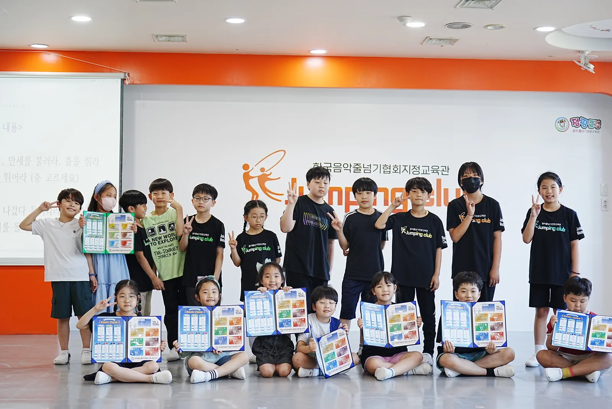
이용 범위는 회원 유형에 따라 다르며, 프로그램을 교육관 상황에 맞게 활용할 수 있습니다.
Materials
※ 소개된 내용은 최우수회원(CEO) 기준이며, 제공 범위는 회원 등급별로 다릅니다.
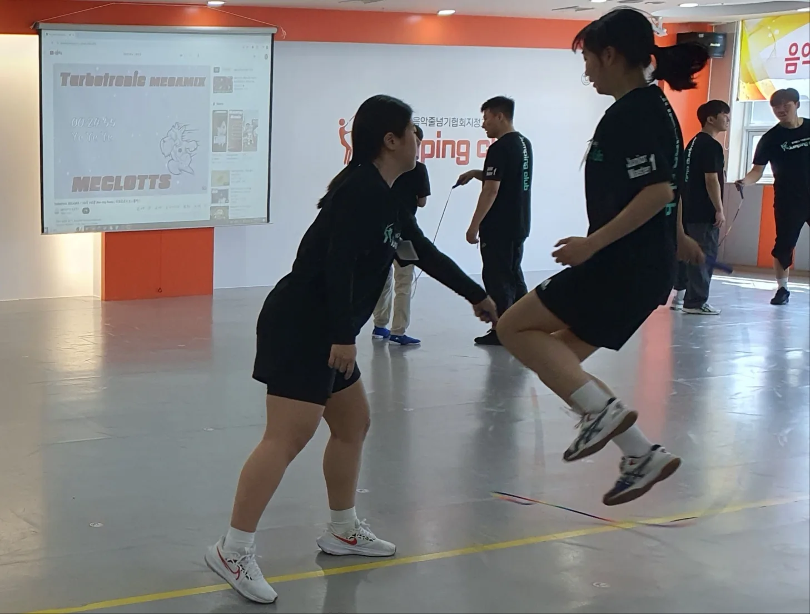
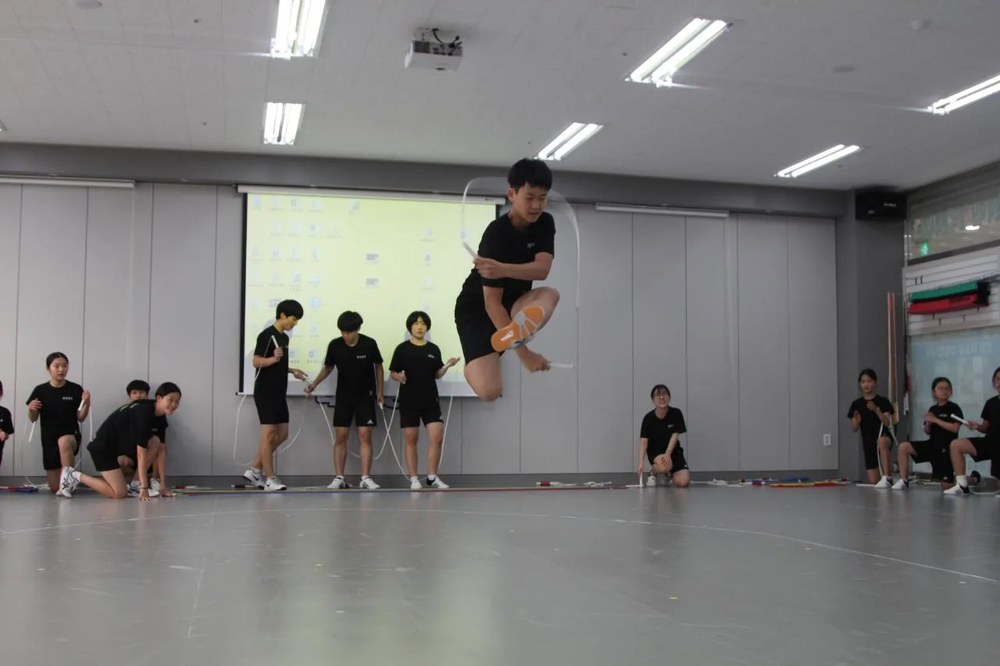
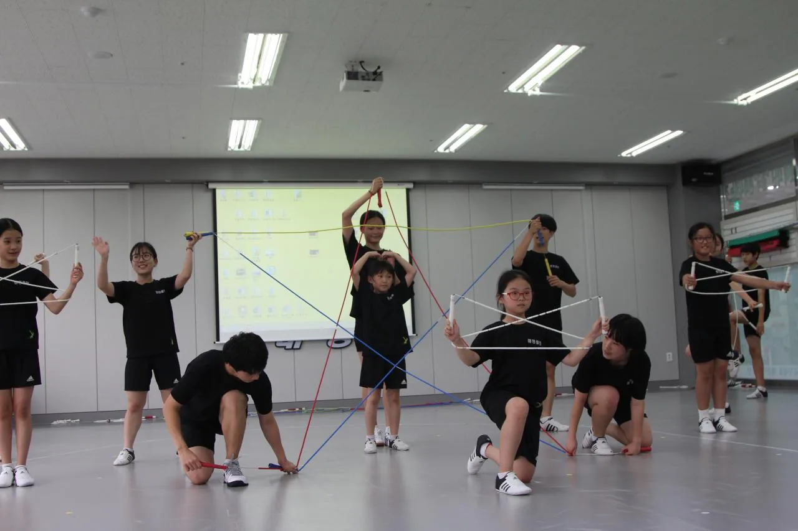
이런 고민, 충분히 이해합니다.
매일의 수업 준비는 늘 관장님 혼자의 몫이었으니까요.
이런 고민을 덜어 드리기 위해
한국음악줄넘기협회, 점핑클럽이
수업을 만들어 왔습니다
2011년부터 쌓아 온 음악줄넘기 교육,
교육관 개관부터 매일 수업까지 한국음악줄넘기협회, 점핑클럽이 함께합니다
Solution 01. 협회 인증급수
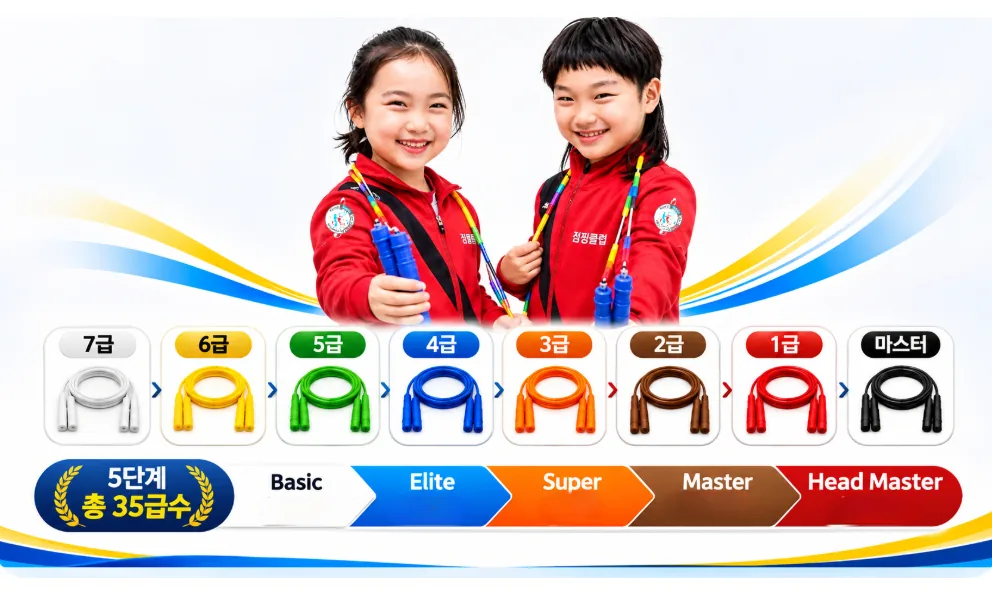
Solution 02. 개관 준비
개관 자료의 제공 범위는 가입 유형에 따라 다릅니다.
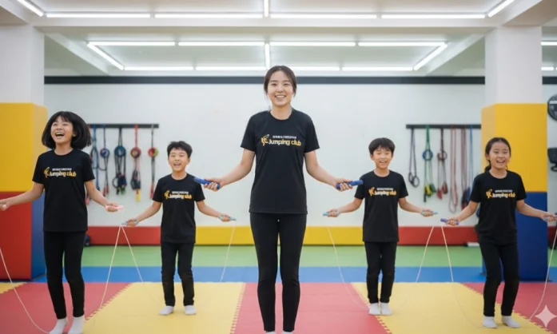
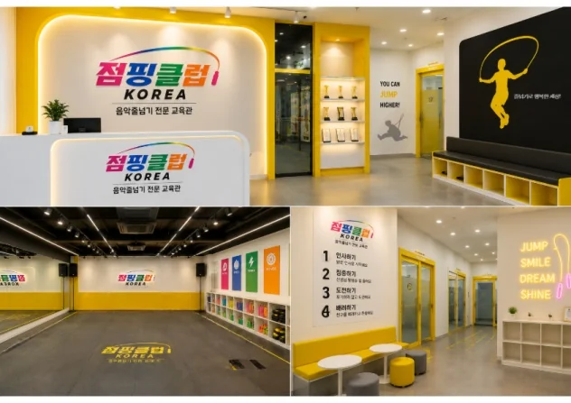
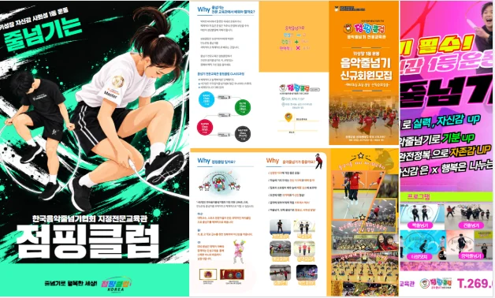
Solution 03. 지도자 교육
지도자 자격연수 3·2·1급
10:00~17:30 하루 과정으로 줄넘기 기술과 지도법, 교육관 경영, 수업 자료 활용법을 배웁니다.
음악줄넘기 일요강사반
매주 일요일 2시간, 수업 지도와 학부모 상담, 최신 자료를 계속 익힙니다. 사범님도 함께 배울 수 있습니다.
태권줄넘기 자격연수
태권도와 줄넘기를 묶어 지도하는 방법을 배우는 3·2·1급 과정입니다.
경영 세미나
교육관 운영과 마케팅을 다루는 세미나입니다. CEO 회원은 할인된 비용으로 참여합니다.
Solution 04. 매일 수업
Solution 05. 학부모 소통
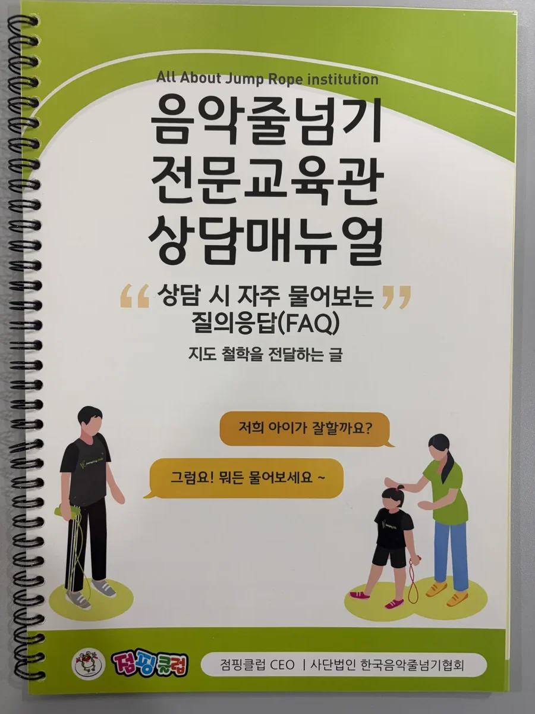
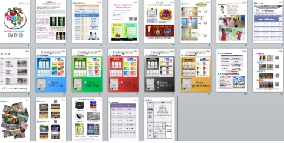
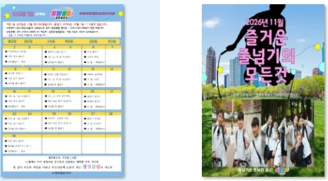
Solution 06. 함께 성장
01교육관 운영 지원
02대회 · 심사
Membership
내게 맞는 회원 유형은 상담을 통해 안내해 드립니다. 체계적인 수업을 시작하고 싶다면 WTRA, 꾸준히 새로운 자료를 활용하고 싶다면 WTRA플러스, 풍성한 수업자료와 경영 상담까지 원하신다면 CEO를 추천드립니다.
☎ 궁금한 점은 070-7703-7713으로 전화 주세요.
01정회원 WTRA
체계적 수업을 채우는 줄넘기 교육자료
상담 후 안내
02우수회원 WTRA플러스
매월 새로운 수업자료
상담 후 안내
03최우수회원 CEO
매일 재밌고 새로운 풍성한 교육자료 업로드, 남중진 회장 1대1 경영 컨설팅
상담 후 안내
급수카드 발급 권한 · 경영 컨설팅 · 로고 사용 · 행사·대회 참가 · 주니어마스터 심사 · 세미나 할인 · 물품 단체구매 할인
이용료와 가입비는 1:1 면담에서 교육관 현황을 확인한 뒤 안내합니다. 자료 구성은 변동될 수 있습니다.
Compare
정회원 WTRA
체계적인 줄넘기 수업의 시작
교육자료와 급수 프로그램을 활용해 단계별로 체계적인 수업을 구성할 수 있습니다. 무엇부터 어떻게 가르칠지 고민되는 지도자에게 수업의 기준과 흐름을 잡아드립니다.
우수회원 WTRA플러스
매주, 매월 새로워지는 수업
정회원 자료에 더해 매주·매월 새로운 수업자료가 제공됩니다. 반복되는 수업에 변화를 주고, 아이들이 다음 시간을 기대하도록 다양한 콘텐츠를 활용할 수 있습니다.
최우수회원 CEO
풍성한 교육자료부터 경영 상담까지
매일·매주 업로드되는 재미있고 새로운 교육자료와 고급 급수·전문 지도 콘텐츠로 수업을 더욱 풍성하게 구성할 수 있습니다. 여기에 남중진 회장의 1:1 경영 컨설팅을 통해 교육관 운영 고민과 개선 방향을 함께 살펴봅니다.
회원 등급별 차이는 무엇인가요?
점핑클럽은 필요한 수업자료와 운영 지원 범위에 따라 세 가지 회원 등급을 선택하실 수 있습니다.
① 정회원 WTRA — 체계적인 줄넘기 수업의 시작
교육자료와 급수 프로그램을 활용해 단계별로 체계적인 수업을 구성할 수 있습니다. 무엇부터 어떻게 가르칠지 고민되는 지도자에게 수업의 기준과 흐름을 잡아드립니다.
② 우수회원 WTRA플러스 — 매주, 매월 새로워지는 수업
정회원 자료에 더해 매주·매월 새로운 수업자료가 제공됩니다. 반복되는 수업에 변화를 주고, 아이들이 다음 시간을 기대하도록 다양한 콘텐츠를 활용할 수 있습니다.
③ 최우수회원 CEO — 풍성한 교육자료부터 경영 상담까지
매일·매주 업로드되는 재미있고 새로운 교육자료와 고급 급수·전문 지도 콘텐츠로 수업을 더욱 풍성하게 구성할 수 있습니다. 여기에 남중진 회장의 1:1 경영 컨설팅을 통해 교육관 운영 고민과 개선 방향을 함께 살펴봅니다.
체계적인 수업을 시작하고 싶다면 WTRA, 꾸준히 새로운 자료를 활용하고 싶다면 WTRA플러스, 풍성한 수업자료와 경영 상담까지 원하신다면 CEO를 추천드립니다.
방과후 강사나 개인 지도자도 가입할 수 있나요?
네. 교육관을 운영하는 관장님뿐 아니라 방과후 강사와 개인 지도자도 가입할 수 있습니다. 수업 대상과 수준에 맞는 자료를 선택해 학교, 방과후 교실, 개인 지도 등 다양한 현장에서 활용하실 수 있습니다. 혼자 매번 수업을 준비하는 부담을 덜고, 단계별 프로그램으로 체계적인 수업을 만들어 보세요. 제공되는 자료의 범위는 가입 유형에 따라 다릅니다.
근처에 이미 점핑클럽 교육관이 있으면 어떻게 되나요?
상담 단계에서 운영 예정 주소와 인근 점핑클럽 교육관의 위치를 확인한 뒤, 연구회에서 가입 가능 여부와 적합한 도입 유형을 안내드립니다.
지역과 운영 형태에 따라 안내가 달라질 수 있으니, 홈페이지 상단 ‘교육관 가입’ 메뉴에서 먼저 주소를 입력해 주세요. 확인 후 구체적인 상담을 도와드립니다.
아직 가입을 결정하지 않았는데 상담만 받아봐도 되나요?
네. 우리 교육관에 맞는 프로그램인지 알아보는 상담부터 시작하셔도 됩니다.
1:1 상담에서 교육관 현황과 주소, 수업 대상, 도입 목적을 확인하고 적합한 가입 유형과 비용을 안내드립니다. 현재 수업이나 운영에서 고민되는 점을 말씀해 주시면 필요한 내용을 중심으로 설명드립니다. 충분히 확인하신 뒤 편하게 가입을 결정하시면 됩니다.
교육관 관장이 아닌 사범님도 가입할 수 있나요?
사범님도 상담을 신청하실 수 있습니다. 수업 역량 향상이나 개인 지도 등 자료를 활용하려는 목적과 환경을 확인한 후, 가입 가능한 유형을 안내드립니다.
소속 교육관 수업에 도입하려는 경우에는 관장님과 활용 방향을 함께 상의해 주시면 더욱 구체적인 안내가 가능합니다.
줄넘기를 직접 가르쳐 본 적이 없는데 괜찮나요?
네. 처음 지도하시는 분도 가입 유형에 맞는 수업영상을 활용해 수업 준비를 시작하실 수 있습니다. 영상으로 동작과 수업 흐름을 확인할 수 있어, 무엇부터 어떻게 가르쳐야 할지에 대한 부담을 덜어드립니다.
매번 무엇을 가르쳐야 할지 수업을 짜는 게 힘들어요. 도움이 될까요?
네. 급수별 음악줄넘기부터 짝줄, 긴줄, 챌린지와 보조운동까지! 다양한 교육자료와 수업 프로그램을 마련해 드려 매번 수업을 새로 짜드립니다.
줄넘기를 잘하는 아이와 못하는 아이를 한 번에 지도할 프로그램이 있나요?
네. 실력별 주고받기 분할영상과 단계별 분할 지도영상을 활용하면, 같은 수업 안에서도 각자의 수준에 맞는 동작을 연습하도록 구성할 수 있습니다.